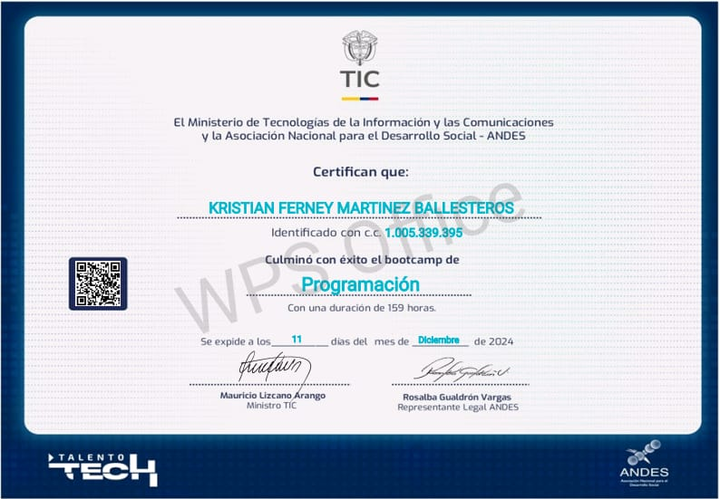
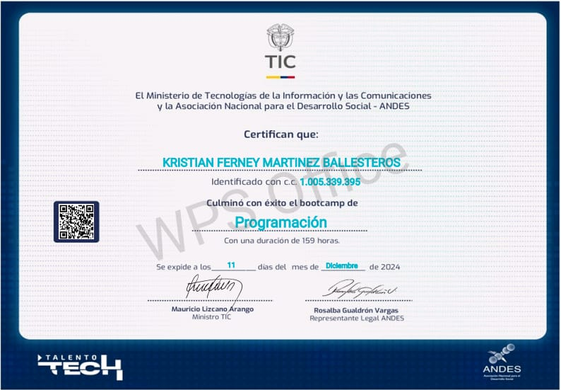

Kristian Ferney Martinez Ballesteros
Desarrollador de Software | Apasionado por el código y la innovación
Sobre Mí
Soy un joven de 24 años apasionado por el desarrollo de software, actualmente en formación como Técnico en Desarrollo de Aplicaciones para Dispositivos Móviles. Busco una empresa que me patrocine para realizar mis prácticas profesionales, donde pueda crecer junto a un equipo de trabajo dinámico y aportar con mis conocimientos y habilidades. Estoy comprometido con la excelencia y motivado por la oportunidad de contribuir al desarrollo de soluciones innovadoras en el ámbito tecnológico.
Formación Académica
- 2017 - Colegio Obtengo titulo de Bachiller
- 2017 - Colegio Obtengo titulo de Tecnico en contabilidad
- 2023 - Academia Obtengo titulo de un diplomado en ecxel basico
- 2024 - Bootcamp Obtengo titulo de un Bootcamp en programacion nivel basico
- 2024 - Presente: Técnico en Desarrollo de Aplicaciones para Dispositivos Móviles (SENA) y estoy en proceso de obtener mi titulo.
Certificados


 

Perfil Laboral
Soy un joven de 24 años con experiencia laboral en diversas áreas, lo que me ha permitido desarrollar habilidades clave como el servicio al cliente, manejo de caja, organización y trabajo en equipo. En el ámbito comercial, trabajé en Megaredil, un supermercado donde desempeñé funciones como el orden y aseo de pasillos y bodega, recepción en caja y atención al cliente, experiencia respaldada con certificado. También he adquirido experiencia en el sector agrícola, colaborando en el negocio familiar de mi padre como agricultor y comercializador de piña, desarrollando habilidades en logística y ventas. Actualmente, laboro en el asadero Rapicali, realizando tareas de atención al cliente y manejo de caja. Mi perfil profesional combina adaptabilidad, compromiso y una orientación al aprendizaje continuo, lo que me permite enfrentar nuevos desafíos con entusiasmo.
Experiencia

Tecnologías que manejo
Proyectos Destacados
- ControlyConfección: Proyecto para gestionar recursos textiles, utilizando Android Studio y Firebase.
Intereses Personales
Soy una persona que disfruta de diversas actividades en su tiempo libre. Me encanta escuchar música, lo cual me ayuda a desconectar y disfrutar del momento. También suelo leer de vez en cuando, lo que me permite expandir mis conocimientos y explorar nuevos mundos. En cuanto a entretenimiento, soy aficionado a las artes marciales mixtas, un deporte que admiro por su disciplina y habilidad. Además, me gusta mantenerme activo entrenando y mejorando mi condición física. Por último, recientemente he descubierto un gran interés por la programación, una pasión que me motiva a seguir aprendiendo y creando soluciones tecnológicas.